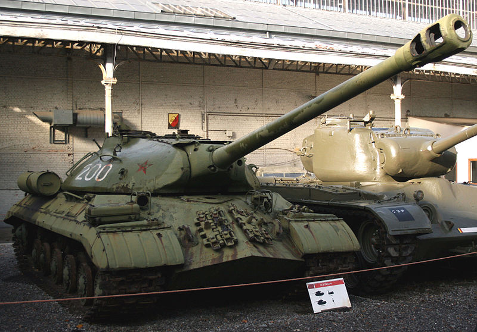

<div class="card">
    
    <div class="card-body">
        <h5 class="card-title">IS-3 - Neuvostoliittolainen raskas panssarivaunu</h5>
        <p class="card-text">
            IS-3 on hankala tuhota, koska siinä on hyvä panssarointi. IS-3:n panssarointiin tehoaa
            parhaiten HEAT-ammustyyppi.
        </p>
        <p class="card-text">
            IS-3 on kuitenkin hidas ja jos se ampuu ohi, tai sen ampuma laukaus kimpoaa panssarista, 
            niin se on helppo kiertää ja tuhota ampumalla sitä kylkeen.
        </p>
        <p class="card-text">
            Jos sinulla on tarpeeksi voimakas kanuuna ja kohtaat IS-3:n edestä, niin kannattaa
            tähdätä yläpanssarilaattaan, eikä alapanssarilaattaan.
        </p>
        <a href="http://wiki.warthunder.com/index.php?title=IS-3" class="btn btn-link">IS-3 War Thunderin Wikissä</a>
    </div>
</div>